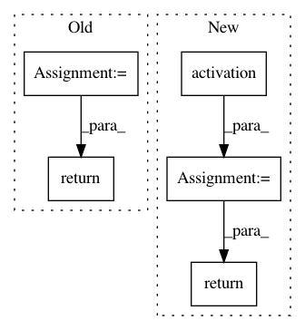

5924176895995757c31804a0985d98e5518a758c,niftynet/layer/deconvolution.py,DeconvolutionalLayer,layer_op,#DeconvolutionalLayer#Any#Any#Any#,213
Before Change
func=self.acti_func,
regularizer=self.regularizers["w"],
name="acti_")
output_tensor = acti_layer(output_tensor)
if keep_prob is not None:
dropout_layer = ActiLayer(func="dropout", name="dropout_")
output_tensor = dropout_layer(output_tensor, keep_prob=keep_prob)
return output_tensor
After Change
output_tensor = dropout_layer(output_tensor, keep_prob=keep_prob)
return output_tensor
output_tensor = activation(conv_layer(input_tensor))
return output_tensor
In pattern: SUPERPATTERN
Frequency: 3
Non-data size: 5
Instances
Project Name: NifTK/NiftyNet
Commit Name: 5924176895995757c31804a0985d98e5518a758c
Time: 2018-11-07
Author: z.eaton-rosen@ucl.ac.uk
File Name: niftynet/layer/deconvolution.py
Class Name: DeconvolutionalLayer
Method Name: layer_op
Project Name: HyperGAN/HyperGAN
Commit Name: 41f7cac9bdc4e3641d77fff81ce751b68bd6b36b
Time: 2017-05-20
Author: martyn@255bits.com
File Name: hypergan/generators/common.py
Class Name:
Method Name: standard_block
Project Name: keras-team/keras
Commit Name: 47ed18a3af8be20dce91286a331d4671074ee0ca
Time: 2015-11-26
Author: francois.chollet@gmail.com
File Name: keras/layers/core.py
Class Name: TimeDistributedDense
Method Name: get_output